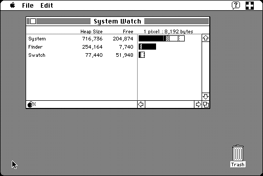

Download
swatch1.22.zip (25K) Swatch 1.2.2 repackaged into a zipped hfs disk image and checksum file. The disk image can be mounted with Mini vMac.
swatch1.22.cpt.hqx (29K) Swatch 1.2.2 in the original format.
copyright: Joe Holt
mod date: Apr 26, 1991
license: Freeware
Visualizes application heaps, showing Locked, Unlocked, and Free blocks.

If you find these downloads useful, please consider helping the Gryphel Project, which hosts them.
Here are the md5 checksums for the downloads, signed with Gryphel Key 5:
--------- GRY SIGNED TEXT --------- 5949b4b8d29418bc90bfe90802f1cd3c swatch1.22.zip 096ebfc6230b26d61bf65171892f8bff swatch1.22.cpt.hqx ------- BEGIN GRY SIGNATURE ------- Gry/4Xa8CFcUzxdN/OTIQwsZ/V32NFYGCSI+LlFYPvvCoXq2RTZt4HpCn88g3tgW RIG/sEDM58R/WMs5sXz5hs9u1NSXj1vTGRHcY6xamWtYPx/M58IU5FVtq+fvrzt9 XucWSNmYsiibGZXe7S2JkX02+WWIgsVBSH9W0YIfl+be+YID9jtLUSawJCnARsOe -------- END GRY SIGNATURE --------